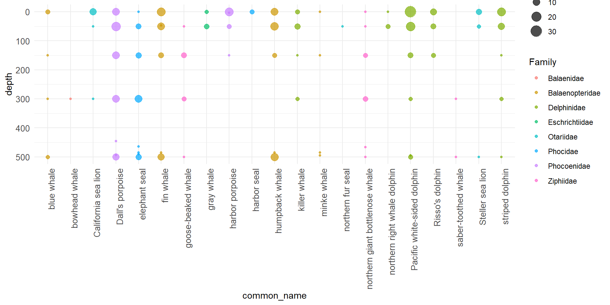
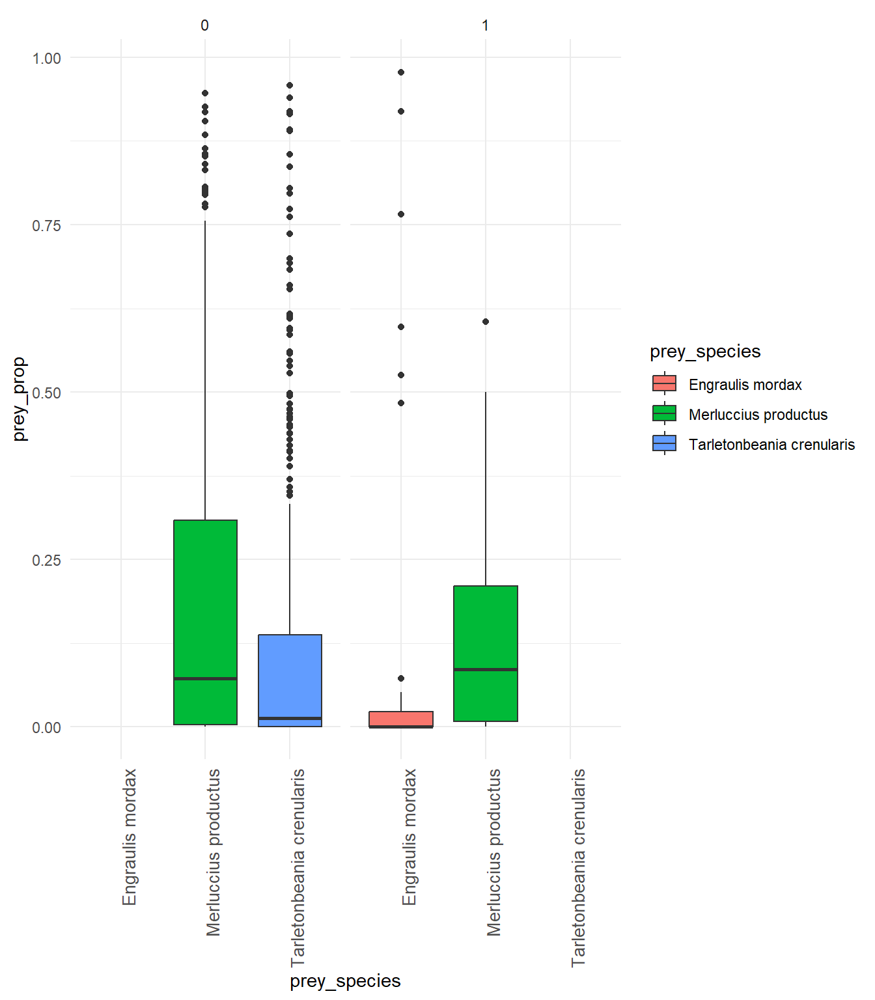
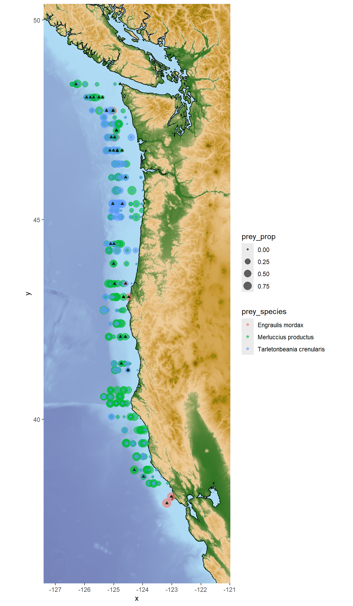
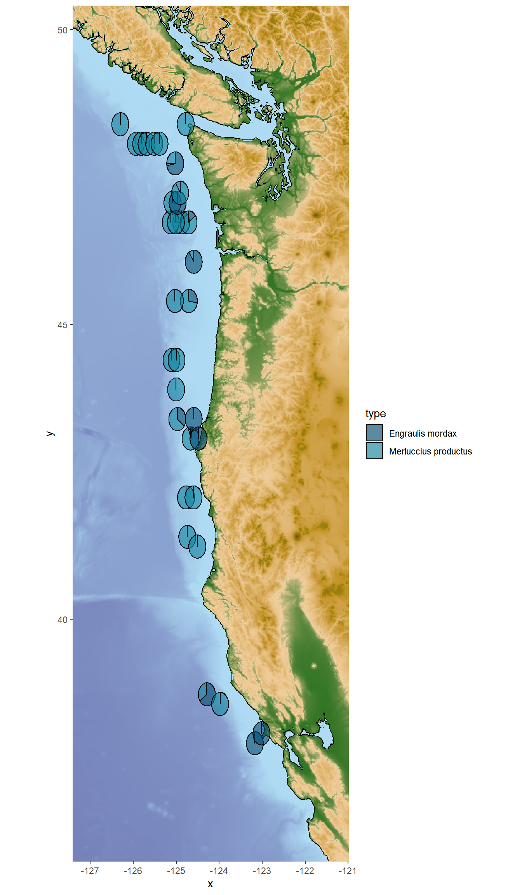

Code
# observations broken out by marine mammal species gives the total rows of the dataset
516*21[1] 10836An intro to maps and interactive plots in R
Amy Van Cise
Sarah Tanja
February 4, 2026
February 4, 2026
Environmental DNA (eDNA) is genetic material obtained directly from environmental samples (soil, water, etc.) without any obvious signs of biological source material. In aquatic environments, organisms shed DNA into the water through skin cells, scales, feces, mucus, and other bodily secretions. By collecting water samples and analyzing the DNA present, researchers can detect and identify species that inhabit or have recently passed through the area.
eDNA detection generally provides presence/absence information.
A positive ‘read’ or match of a fragment of DNA to a known species can confirm that species was present .. but exactly how long ago, how far that DNA fragment may have been carried by currents, and how many marine mammal individuals are represented by eDNA are all questions that are actively being researched!
The eDNA dataset that we will be working with was collected during 2019.
This data contains:
[1] 10836There is a better scaling relationship between number of reads and abundance of fish (in other words… more fish DNA found, likely means more fish were present!). This is not necessarily true for marine mammals… where more eDNA found may just mean that the sample was collected in the midst of a single whale poo cloud… Therefore marine mammal eDNA is coded as present/absent, while fish eDNA is coded by proportion of reads that mapped to the fish species.
We can use this dataset to explore relationships between marine mammal (predator) presence and fish (prey) presence!
Optional background reading:
Make exploratory observations from the eDNA dataset
Ask Guiding Research Questions
Find one paper from the primary literature related to your guiding research question that deepens your understanding
Develop specific null and alternate hypotheses
Identify x and y variables
Make sure you get eDNA_MM_fish_detections.csv from the course Canvas page and save it in a data folder within your new analysis folder.
One of the packages we are using this week is marmap, which requires R version 4.0.x or higher. Check your R version by running version in the R console. If your version is lower than 4.0.x, please update R before proceeding.
Once you’ve confirmed R version 4.0.x or higher.. let’s install some new packages! You can install new packages by typing install.packages("new-package-name") in the R console. You should only need to do this once! R may ask you to restart after installation… Save your .Rmd file and restart R if prompted. Remember.. you will need to install the package before attempting to load the package from your library…
Use the read_csv() function (ex. read_csv("path/to/your/file.csv") ) to load your data into your R environment.
head(your_data) to see the first few rows of your dataglimpse(your_data) to see the structure of your datasummary(your_data) to see summary statistics of your dataHere we use the filter() function! This function looks at each row and keeps only those rows that meet your specified criteria using logical operators. Some common logical operators to use with filter include:
== which means “keep rows that are equal to”!= which means “keep rows except those that are equal to”Use filter() to just look at positive detections.
Remember, a positive detection means that marine mammal species had DNA found in a water sample taken at a specific location and depth.
How many observations were filtered out when we filtered our rows (aka number of observations) to only include positive detections? Some options for you:
Look at the number of observations in the global environment view pane and compere the dataframes before and after filtering.
Look at the dimensions of the data before and after filtering using the dim(your_data) function.
Or use the nrow(your_data) function to count the number of rows in a dataframe.
#2a Visualize: plot MM detections by depth
ggplot(eDNA_positive, aes(y = common_name, x = depth,
fill = Family, color = Family)) +
geom_count(alpha = 0.7) +
coord_flip() + # flip coordinates so that depths are on y-axis
scale_x_reverse() + # 0 at the top, deeper depths going down
scale_y_discrete() +
theme_minimal()+
theme(
axis.text.y = element_text(size = 10),# straight labels
axis.text.x = element_text(size = 10,
angle = 90,
hjust = 1) # right aligned x-axis labels
)
This means using R to make maps!
Save the longitude and latitude limits (the four corners or the bounding box) of your data as named values using the functions max() and min().
Get the bathymetry data from NOAA using the marmap::getNOAA.bathy() function. This function downloads bathymetry (ocean depth) data from NOAA’s database for the specified longitude and latitude limits, and may take 30-60 seconds to run.
Use the autoplot.bathy() function to create a base map with the downloaded bathymetry data.
Choose one Family of marine mammals to visualize presence in 3D.
Here we will use phocids (true seals) as an example, students should work in their group to choose a different Family of interest to visualize! Pick one that you would like to explore with your guiding research question.
First we filter the positive detection data to just the phocids.
Now we can use the plot_ly() function from the plotly package to create an interactive 3D scatter plot of the phocid detections.
This code chunk creates the 3D plot object and stores it in the variable phocid_3D.
phocid_3D <- plot_ly(phocids,
x = ~lon,
y = ~lat,
z = ~rev(depth),
color = ~Predator,
type = "scatter3d",
mode = "markers") %>% #this first bit up to here is all you need. The rest makes it a bit fancier
layout(scene = list(aspectmode = "manual",
aspectratio = list(x = 1, y = 3, z = 0.5), #this stretches longitude axis so that it's a bit closer to reality
zaxis = list(autorange = "reversed"), #this reverses the depth axis so that deeper detections are at the bottom
xaxis = list(title = "Longitude"),
yaxis = list(title = "Latitude")))And now we can view the interactive 3D plot!
Explore a few different marine mammal family groups in 3D! Use the observations to begin thinking about your guiding research question. Talk with your group members!
Use filter()to select one marine mammal of interest and pivot_longer() to get all the fish species to a single column.
It’s important to only keep fish species that are commonly detected in the dataset to make visualization easier.
Here we can use group_by() combined with filter() for fish species that have an average proportion of reads greater than 10% when the marine mammal is detected or not detected.
Here we use ggplot() with geom_boxplot() and facet_wrap() to create boxplots of prey species proportions when the predator is detected vs not detected. Work together within and across groups to try and recreate this plot!
x = prey_species and y = prey_prop from the wrangled and filtered data frame where pivot_longer() was used to make the new columns prey_species reflect the fish species and prey_prop reflect the proportion of DNA reads that mapped to that fish species.

#option 1: plot prey species on top of each other
#keep only prey species you want to plot!
#humpy_prey <- humpy %>%
# filter(prey_species %in% c("Stenobrachius", #"Bathylagidae", "Clupea", "Engraulis", "Thunnus", #"Sardinops"))
#now plot!
base_map +
geom_point(data = humpy,
aes(x=lon, y = lat, size = prey_prop,
color = prey_species),
alpha = 0.6)+
geom_point(data = humpy %>% filter(Detected == 1),
aes(x=lon, y = lat),
alpha = 0.5,
color = "black",
shape = 17)
For this plot option you will need to install the scatterpie and ggnewscale packages if you haven’t already! This code also uses the PNWColors package for color palettes.
geom_scatterpie() allows you to plot pie charts at specific locations on a map! Each pie chart can represent multiple variables (in this case, proportions of different prey species) at that location. The makeup of the pie charts will change depending on which prey species you include in the cols argument of geom_scatterpie().
#option 2: pie charts!
#first we have to wrangle again!
humpy_wide <- humpy %>%
filter(Detected == 1) %>%
pivot_wider(names_from=prey_species, values_from = prey_prop, values_fill = 0)
# ok now plot
library(scatterpie)
library(ggnewscale)
library(PNWColors)
base_map +
new_scale_fill() +
geom_scatterpie(data = humpy_wide,
aes(lon, lat), cols = c("Engraulis mordax", "Merluccius productus"), alpha = 0.6,
pie_scale = 3) +
scale_fill_manual(values = pnw_palette("Bay"))
Continue exploring varying relationships between marine mammals, depth, location, and prey species! Use these observations to help you select your guiding research question.
Use Google Scholar or another academic search engine to find one primary literature paper to inform your guiding research question and hypotheses. Cite your paper in your week 5 lab report!
Your week 5 lab reports should include the following components:
Background
Research Question
Hypotheses
X/Y variables
Discuss/choose Research Question(s) as a group
Use Google Scholar for background information (e.g. your predators diet, competitors, predators, and known distribution)
Formulate Hypotheses as a group
EACH PERSON will separately write a ~½-1 page lab report that introduces the Research Questions and Hypotheses chosen as a group
…If needed, we will continue data exploration and hypothesis formulation in Week 6
Remember! This is just the beginning of your exploration of the eDNA dataset; we will build upon it in the next labs.
---
title: "1. Making Observations using eDNA"
subtitle: "An intro to maps and interactive plots in R"
page-layout: article
author:
- Amy Van Cise
- Sarah Tanja
date: "2026-02-04"
draft: false
date-modified: today
order: 1
format:
html:
toc: true
toc-depth: 2
number-sections: false
code-fold: true
editor:
markdown:
wrap: 72
---
```{r setup, include=FALSE}
knitr::opts_chunk$set(
echo = TRUE,
message = FALSE,
warning = FALSE
)
```
# Background
Environmental DNA (eDNA) is genetic material obtained directly from
environmental samples (soil, water, etc.) without any obvious signs of
biological source material. In aquatic environments, organisms shed DNA
into the water through skin cells, scales, feces, mucus, and other
bodily secretions. By collecting water samples and analyzing the DNA
present, researchers can detect and identify species that inhabit or
have recently passed through the area.
eDNA detection generally provides presence/absence information.
A positive 'read' or match of a fragment of DNA to a known species can
confirm that species was present .. but *exactly* how long ago, how far
that DNA fragment may have been carried by currents, and how many marine
mammal individuals are represented by eDNA are all questions that are
actively being researched!
The eDNA dataset that we will be working with was collected during 2019.
This data contains:
- 516 water samples
- Each water sample was collected at a specific location (lat/lon)
and depth in the water column.
- 21 species of marine mammals
- Each marine mammal species column contains a 1 (detected) or 0
(not detected) for that species in that water sample.
```{r}
# observations broken out by marine mammal species gives the total rows of the dataset
516*21
```
- 256 species of fish [columns 16 - 271 in the dataset]
- Each fish species column contains the proportion of DNA sequence
reads that matched to that fish species in that water sample.
::: callout-note
There is a better scaling relationship between number of reads and
abundance of fish (in other words... more fish DNA found, likely means
more fish were present!). This is *not necessarily true* for marine
mammals... where more eDNA found may just mean that the sample was
collected in the midst of a single whale poo cloud... Therefore marine
mammal eDNA is coded as present/absent, while fish eDNA is coded by
proportion of reads that mapped to the fish species.
:::
We can use this dataset to explore relationships between marine mammal (predator)
presence and fish (prey) presence!
Optional background reading:
- Explore materials from the [Kelly
Lab](https://kellyresearchlab.com/) (School of Marine &
Environmental Affairs, University of Washington) and the Marine
mammal Remote detection via INovative environmental DNA sampling
[(MMARINeDNA)
Project](https://kellyresearchlab.com/marine-mammal-remote-detection-via-innovative-environmental-dna-sampling)
- Learn more about how eDNA is collected and used from [The eDNA
Collaborative](https://www.ednacollab.org/)
- [eDNA
sampling](https://calcofi.org/cruise-experience-spotlight-edna-sampling-on-the-fall-2025-calcofi-cruise/)
at sea blog post
# Goals & expectations for Lab 5
- Make exploratory observations from the eDNA dataset
- Ask Guiding Research Questions
- Find one paper from the primary literature related to your guiding
research question that deepens your understanding
- Develop specific null and alternate hypotheses
- Identify x and y variables
# Making Observations from eDNA Data
## Setup coding environment
### Create a new folder within your R Project for this week's analysis!
### Download the datasets
Make sure you get `eDNA_MM_fish_detections.csv` from the course Canvas page and save it in a `data` folder within your new analysis folder.
### Check your R version
::: callout-important
One of the packages we are using this week is `marmap`, which requires R version 4.0.x or higher. Check your R version by running `version` in the R console. If your version is lower than 4.0.x, please update R before proceeding.
:::
### Install new packages
::: callout-important
Once you've confirmed R version 4.0.x or higher.. let's install some new packages! You can
install new packages by typing `install.packages("new-package-name")` in
the R console. You should only need to do this once! R may ask you to
restart after installation... Save your .Rmd file and restart R if
prompted. Remember.. you will need to install the package before
attempting to load the package from your library...
:::
### Load libraries
```{r}
library(tidyverse)
#installing marmap can take 30-60 seconds
#make sure R is up to date (v 4.0.x) with "version" in console
library(raster) # for working with spatial data, dependency for marmap
library(marmap) # for bathymetry data
library(plotly) # for making an interactive 3D plot!
```
### Load data
Use the `read_csv()` function (ex. `read_csv("path/to/your/file.csv")` ) to load your data into your R environment.
```{r}
eDNA <- read_csv("../data/eDNA_MM_fish_detections_clean.csv")
```
- Checkout your data!
- What are the variables?
- How many observations are there?
- Use helper functions like:
- `head(your_data)` to see the first few rows of your data
- `glimpse(your_data)` to see the structure of your data
- `summary(your_data)` to see summary statistics of your data
# Marine mammal eDNA detections
Here we use the `filter()` function!
This function looks at each row and keeps only those rows that meet your specified criteria using logical operators.
Some common logical operators to use with filter include:
- `==` which means "keep rows that are equal to"
- `!=` which means "keep rows except those that are equal to"
## Wrangle
Use `filter()` to just look at positive detections.
Remember, a positive detection means that marine mammal species had DNA found in a water sample taken at a specific location and depth.
```{r}
eDNA_positive <- eDNA %>%
filter(Detected == 1)
```
::: callout-tip
How many observations were filtered out when we filtered our rows (aka number of observations) to only include positive detections? Some options for you:
- Look at the number of observations in the global
environment view pane and compere the dataframes before and after
filtering.
- Look at the dimensions of the data before and after
filtering using the `dim(your_data)` function.
- Or use the
`nrow(your_data)` function to count the number of rows in a dataframe.
:::
```{r, include=FALSE}
dim(eDNA)
dim(eDNA_positive)
```
```{r, eval=FALSE, include=FALSE}
#Are any fish species (columns 16:271) not detected at all in any samples (rows) that are positive for predators?
which(colSums(eDNA_positive[,16:271]) == 0)
```
## Plot marine mammal detections by depth
```{r, fig.width = 10}
#2a Visualize: plot MM detections by depth
ggplot(eDNA_positive, aes(y = common_name, x = depth,
fill = Family, color = Family)) +
geom_count(alpha = 0.7) +
coord_flip() + # flip coordinates so that depths are on y-axis
scale_x_reverse() + # 0 at the top, deeper depths going down
scale_y_discrete() +
theme_minimal()+
theme(
axis.text.y = element_text(size = 10),# straight labels
axis.text.x = element_text(size = 10,
angle = 90,
hjust = 1) # right aligned x-axis labels
)
```
## Plot marine mammal detections across spatial distribution
This means using R to make maps!
### Make the base map
Save the longitude and latitude limits (the four corners or the bounding box) of your data as named values using the functions `max()` and `min()`.
```{r}
lon1 <- max(eDNA$lon) + 2
lon2 <- min(eDNA$lon) - 1
lat1 <- min(eDNA$lat) - 2
lat2 <- max(eDNA$lat) + 2
```
Get the bathymetry data from NOAA using the `marmap::getNOAA.bathy()` function. This function downloads bathymetry (ocean depth) data from NOAA's database for the specified longitude and latitude limits, and may take 30-60 seconds to run.
```{r}
bathy_map <- getNOAA.bathy(lon1=lon1, lon2=lon2, lat1=lat1, lat2=lat2,
resolution=1, keep=TRUE)
```
Use the `autoplot.bathy()` function to create a base map with the downloaded bathymetry data.
```{r, fig.height=12}
#create a ggplot object appropriate to the bathy data object
base_map <- autoplot.bathy(bathy_map, geom=c('raster'),
show.legend=FALSE) + #turn off legend
scale_fill_etopo() #special topographic colors
base_map
```
```{r, include=FALSE}
base_map_fancy <- autoplot.bathy(bathy_map, geom=c('raster'),
show.legend=FALSE) + #turn off legend
scale_fill_gradient2(low = "white", mid = "white", high = "gainsboro",
limits = c(min(bathy_map), 0), # only sea depths; land becomes NA
na.value = "gainsboro") + # land colour
theme(axis.title = element_blank()) + #remove the axis titles
scale_x_continuous(breaks=seq(-126,-124, 2), #where to place the values
labels=paste0(seq(126, 124, -2),'W'),
expand = c(0, 0)) +
scale_y_continuous(breaks=seq(38,48,2), #where to place the values
labels=paste0(seq(38,48,2),'N'),
expand = c(0, 0))
base_map_fancy
```
### Add points to the map
```{r, fig.height=12}
#then add points to the map
whale_map <- base_map +
geom_point(data = eDNA_positive, aes(x=lon, y=lat, color = Family),
alpha = 0.6, size = 1.5)
whale_map
```
## Plot marine mammal detections in 3D (longitude, latitude, depth)
Choose one Family of marine mammals to visualize presence in 3D.
Here we will use phocids (true seals) as an example, students should work in their group to choose a different Family of interest to visualize! Pick one that you would like to explore with your guiding research question.
First we filter the positive detection data to just the phocids.
```{r}
phocids <- eDNA_positive %>% filter(Family == "Phocidae")
```
Now we can use the `plot_ly()` function from the `plotly` package to create an interactive 3D scatter plot of the phocid detections.
This code chunk creates the 3D plot object and stores it in the variable `phocid_3D`.
```{r}
phocid_3D <- plot_ly(phocids,
x = ~lon,
y = ~lat,
z = ~rev(depth),
color = ~Predator,
type = "scatter3d",
mode = "markers") %>% #this first bit up to here is all you need. The rest makes it a bit fancier
layout(scene = list(aspectmode = "manual",
aspectratio = list(x = 1, y = 3, z = 0.5), #this stretches longitude axis so that it's a bit closer to reality
zaxis = list(autorange = "reversed"), #this reverses the depth axis so that deeper detections are at the bottom
xaxis = list(title = "Longitude"),
yaxis = list(title = "Latitude")))
```
And now we can view the interactive 3D plot!
```{r}
phocid_3D
```
::: callout-tip
Explore a few different marine mammal family groups in 3D! Use the observations to begin thinking about your guiding research question. Talk with your group members!
:::
# Predator prey eDNA presence relationships
## Wrangle
Use `filter()`to select one marine mammal of interest and `pivot_longer()` to get all the fish species to a single column.
It's important to only keep fish species that are commonly detected in the dataset to make visualization easier.
Here we can use `group_by()` combined with `filter()` for fish species that have an average proportion of reads greater than 10% when the marine mammal is detected or not detected.
```{r}
humpy <- eDNA %>%
filter(common_name == "humpback whale") %>%
pivot_longer(16:length(.), names_to = "prey_species", values_to = "prey_prop") %>%
group_by(Detected, prey_species) %>%
filter(mean(prey_prop) > 0.10) %>%
ungroup()
```
```{r, include=FALSE}
# another example
lags <- eDNA %>%
filter(common_name == "Pacific white-sided dolphin") %>%
pivot_longer(16:length(.), names_to = "prey_species", values_to = "prey_prop") %>%
group_by(Detected, prey_species) %>%
filter(mean(prey_prop, na.rm = TRUE) > 0.10) %>%
ungroup()
```
## Plot prey species proportions vs predator presence
Here we use `ggplot()` with `geom_boxplot()` and `facet_wrap()` to create boxplots of prey species proportions when the predator is detected vs not detected. Work together within and across groups to try and recreate this plot!
::: callout-tip
`x = prey_species` and `y = prey_prop` from the wrangled and filtered data frame where `pivot_longer()` was used to make the new columns `prey_species` reflect the fish species and `prey_prop` reflect the proportion of DNA reads that mapped to that fish species.
:::
```{r fig.height=8, echo=FALSE}
ggplot(humpy, aes(x = prey_species, y = prey_prop)) +
geom_boxplot(aes(fill = prey_species)) +
theme(legend.position = "none") +
facet_wrap(~Detected) +
scale_x_discrete() +
theme_minimal()+
theme(
axis.text.x = element_text(size = 10,
angle = 90,
hjust = 1)
)
```
```{r, include=FALSE}
ggplot(lags, aes(x = prey_species, y = prey_prop)) +
geom_boxplot(aes(fill = prey_species)) +
theme(legend.position = "none") +
facet_wrap(~Detected) +
scale_x_discrete() +
theme_minimal()+
theme(
axis.text.x = element_text(size = 10,
angle = 90,
hjust = 1)
)
```
## Plot predator and prey species spatial distribution
```{r, fig.height=12}
#option 1: plot prey species on top of each other
#keep only prey species you want to plot!
#humpy_prey <- humpy %>%
# filter(prey_species %in% c("Stenobrachius", #"Bathylagidae", "Clupea", "Engraulis", "Thunnus", #"Sardinops"))
#now plot!
base_map +
geom_point(data = humpy,
aes(x=lon, y = lat, size = prey_prop,
color = prey_species),
alpha = 0.6)+
geom_point(data = humpy %>% filter(Detected == 1),
aes(x=lon, y = lat),
alpha = 0.5,
color = "black",
shape = 17)
```
## Bonus option : Plot predator and prey species spatial distribution using pie charts
For this plot option you will need to install the `scatterpie` and `ggnewscale` packages if you haven't already! This code also uses the `PNWColors` package for color palettes.
::: callout-tip
`geom_scatterpie()` allows you to plot pie charts at specific locations on a map! Each pie chart can represent multiple variables (in this case, proportions of different prey species) at that location.
The makeup of the pie charts will change depending on which prey species you include in the `cols` argument of `geom_scatterpie()`.
:::
```{r, fig.height=12}
#option 2: pie charts!
#first we have to wrangle again!
humpy_wide <- humpy %>%
filter(Detected == 1) %>%
pivot_wider(names_from=prey_species, values_from = prey_prop, values_fill = 0)
# ok now plot
library(scatterpie)
library(ggnewscale)
library(PNWColors)
base_map +
new_scale_fill() +
geom_scatterpie(data = humpy_wide,
aes(lon, lat), cols = c("Engraulis mordax", "Merluccius productus"), alpha = 0.6,
pie_scale = 3) +
scale_fill_manual(values = pnw_palette("Bay"))
```
::: callout-tip
Continue exploring varying relationships between marine mammals, depth, location, and prey species! Use these observations to help you select your guiding research question.
:::
# Search primary literature
Use Google Scholar or another academic search engine to find one primary literature paper to inform your guiding research question and hypotheses. Cite your paper in your week 5 lab report!
# Week 5 lab report expectations
Your week 5 lab reports should include the following components:
- Background
- Research Question
- Hypotheses
- X/Y variables
- Discuss/choose Research Question(s) as a group
- Use Google Scholar for background information (e.g. your predators diet, competitors, predators, and known distribution)
- Formulate Hypotheses as a group
- EACH PERSON will separately write a ~½-1 page lab report that introduces the Research Questions and Hypotheses chosen as a group
...If needed, we will continue data exploration and hypothesis formulation in Week 6
# To be continued...
Remember! This is just the beginning of your exploration of the eDNA dataset; we will build upon it in the next labs.